GattClient
GattClient implements GATT client operations: MTU exchange, service / characteristic / descriptor discovery, read, write, and notification / indication handling. All asynchronous callbacks are delivered on GattClientResponse.
The companion server-side GattServerDisService publishes the Device Information Service on the local GATT server.
State Constraints
Unless a method’s documentation specifies otherwise, all GattClient methods require an active BLE connection (the paired GAP service last reported CurrentState(connected) for the target peripheral). Calling any GattClient method without an active connection is a contract violation and results in an assertion on the Node side. This applies to calls issued before the first CurrentState(connected) and to calls issued after a CurrentState(standby) that followed an unexpected disconnect (peripheral-initiated, link supervision timeout, or Node reset). Applications should treat every fresh CurrentState(connected) as the service-ready boundary and re-drive discovery from StartServiceDiscovery.
Only one acknowledged operation may be in flight at a time. WriteCharacteristicWithoutResponse and IndicationDone may be issued concurrently alongside an in-flight acknowledged operation, but two WriteCharacteristicWithoutResponse calls cannot overlap. Non-conformance results in an assertion on the Node side.
Discovery must follow the sequence Service → Characteristic → Descriptor. Each step must complete (indicated by its matching *Complete callback) before initiating the next.
Startup
GattClient has no per-service startup handshake of its own. The service becomes callable once the underlying transport is up and the paired GAP service has reported CurrentState(connected) for the target remote device. See GapCentral (or GapPeripheral) for the transport / SESAME startup boundary.
Connection loss
Any pending GattClient operation is implicitly cancelled on connection loss. For each pending operation, its listed Expected response is guaranteed to be delivered with an error status before the paired GAP service reports CurrentState(standby). The App must re-drive discovery from StartServiceDiscovery on the next connection - handles from the previous session are not guaranteed to be valid.
Typical usage
A typical GATT session against a bonded peripheral runs the steps below in order. Each bullet points to the diagram that shows the mechanic in detail; the composite BLE Central GATT Session wires all of them together.
-
Wait for
GapCentralResponse.CurrentState(connected)from the paired GAP service. -
Call
MtuSizeExchangeRequestonce, before any discovery. The negotiated MTU is used by subsequent read / write PDUs and by paginated discovery responses (ATT_READ_BY_GROUP_TYPE_RSP,ATT_READ_BY_TYPE_RSP), so widening the bearer up-front reduces the number of ATT round-trips discovery needs. -
Walk the discovery sequence:
StartServiceDiscovery→StartCharacteristicDiscovery(once per discovered service) →StartDescriptorDiscovery(once per characteristic that owns descriptors). See Discovery Flow. -
Subscribe by writing to the target characteristic’s CCCD:
0x0100for notifications,0x0200for indications (eachIndicationReceivedmust be acknowledged withIndicationDone). See Indication Flow. -
On
WriteCharacteristicWithoutResponseComplete(retry), re-submit the exact same call.retryis a client-side backpressure signal (the local ATT bearer was momentarily full); the peripheral has not seen the request, so no state has changed on its side and an immediate re-submit is normally sufficient. OnlyWriteCharacteristicWithoutResponsecurrently reportsretry; acknowledged reads and writes only reportsuccessorerror. See Operation Failure and Retry. -
On disconnect, expect the pending operation’s
Expected responseto fire with an error status beforeCurrentState(standby), then re-run the entire session fromMtuSizeExchangeRequeston the nextCurrentState(connected). Handles from the previous session are not guaranteed to be valid. See Disconnect During Operation.
See GattServerDisService for the companion server-side service that publishes the Device Information Service.
Per-Method Sequence Diagrams
MtuSizeExchangeRequest
Allowed states: connected. May only be called once per connection.
Response sequences:
-
Successful exchange:
MtuSizeExchangeComplete(value)→OperationComplete(success). -
Peripheral / L2CAP failure:
OperationComplete(error).
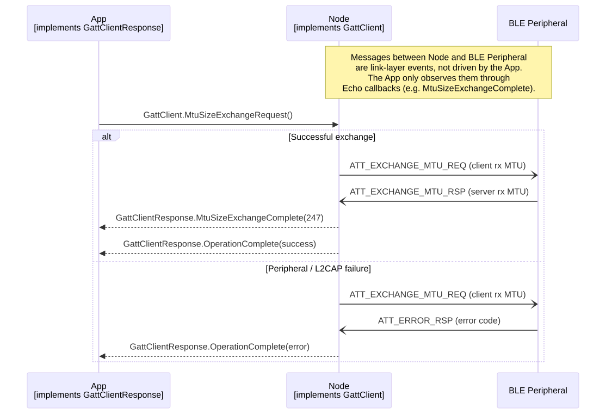
StartServiceDiscovery
Allowed states: connected. First step of the Service → Characteristic → Descriptor discovery sequence.
Response sequences:
-
Zero or more
ServiceDiscovered(uuid, handles)→ServiceDiscoveryComplete(success). -
Peripheral / L2CAP failure:
ServiceDiscoveryComplete(error).
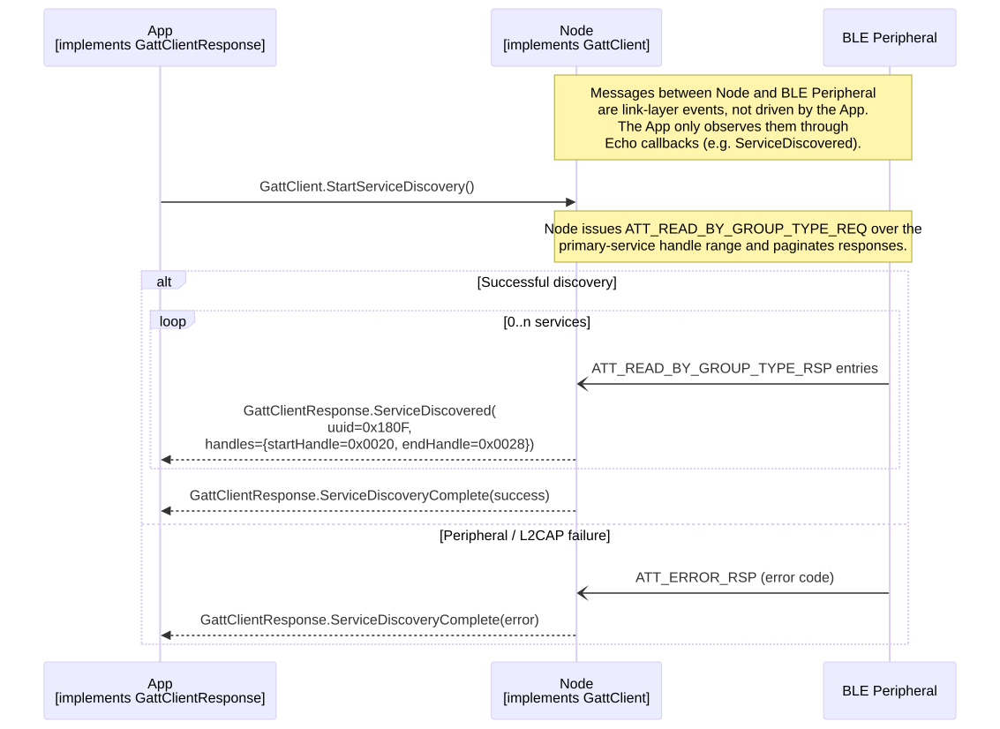
StartCharacteristicDiscovery
Allowed states: connected. Pre-conditions: the service’s handle range is known from a prior ServiceDiscovered callback. Must be called once per discovered service.
Response sequences:
-
Zero or more
CharacteristicDiscovered(uuid, declarationHandle, valueHandle, properties)→CharacteristicDiscoveryComplete(success). -
Peripheral / L2CAP failure:
CharacteristicDiscoveryComplete(error).
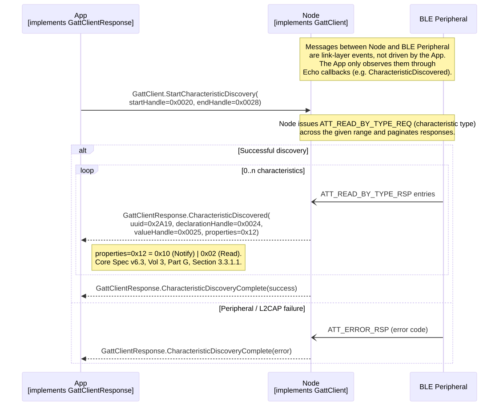
StartDescriptorDiscovery
Allowed states: connected. Pre-conditions: the characteristic’s valueHandle is known from a prior CharacteristicDiscovered callback. The descriptor range for a characteristic spans valueHandle to nextCharacteristic.declarationHandle - 1 (or service.handles.endHandle for the last characteristic in a service).
Invalid handle range: providing a range that is syntactically invalid (endHandle < startHandle) or outside the peripheral’s attribute table is stack-dependent. Some stacks report DescriptorDiscoveryComplete(error), others assert on the Node side. The App is responsible for supplying a valid range derived from the previous discovery step.
Response sequences:
-
Zero or more
DescriptorDiscovered(uuid, handle)→DescriptorDiscoveryComplete(success). -
Peripheral / L2CAP failure:
DescriptorDiscoveryComplete(error).
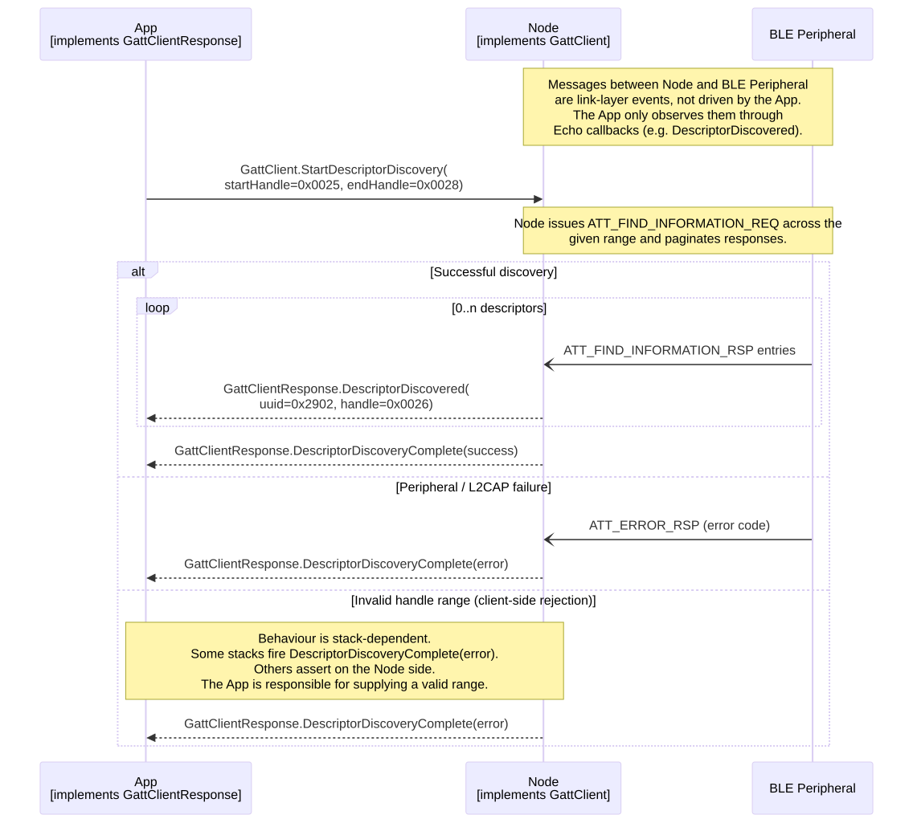
ReadCharacteristic
Allowed states: connected. Pre-conditions: valueHandle known from CharacteristicDiscovered.
Response sequences:
-
Successful read:
ReadCharacteristicResponse(data)→OperationComplete(success). -
Peripheral-side rejection (permissions, invalid handle, insufficient authentication, etc.):
OperationComplete(error).
WriteCharacteristic
Allowed states: connected. Pre-conditions: valueHandle known from CharacteristicDiscovered.
Response sequences:
-
Successful write:
OperationComplete(success)afterATT_WRITE_RSP. -
Peripheral-side rejection:
OperationComplete(error).
WriteCharacteristicWithoutResponse
Allowed states: connected. May be called while another operation is in progress, except while another WriteCharacteristicWithoutResponse is in flight.
Response sequences:
-
Queued locally:
WriteCharacteristicWithoutResponseComplete(success). -
Local bearer full:
WriteCharacteristicWithoutResponseComplete(retry). The App should re-submit the same call. The peripheral has not seen the request, so re-submission is safe. -
Client-side rejection (invalid handle, permission failure):
WriteCharacteristicWithoutResponseComplete(error).
success only indicates the command was accepted by the local ATT bearer for transmission - the peripheral never acknowledges an ATT_WRITE_CMD, so delivery to the server is not confirmed.
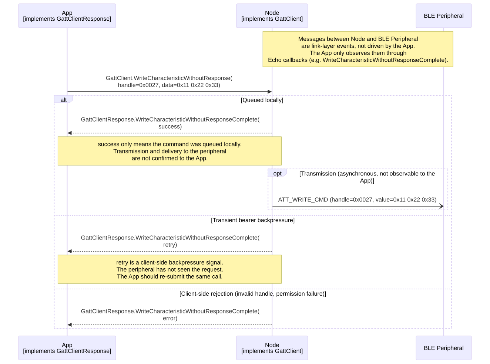
ReadDescriptor
Allowed states: connected. Pre-conditions: descriptor handle known from DescriptorDiscovered.
Response sequences:
-
Successful read:
ReadDescriptorResponse(data)→OperationComplete(success). -
Peripheral-side rejection:
OperationComplete(error).
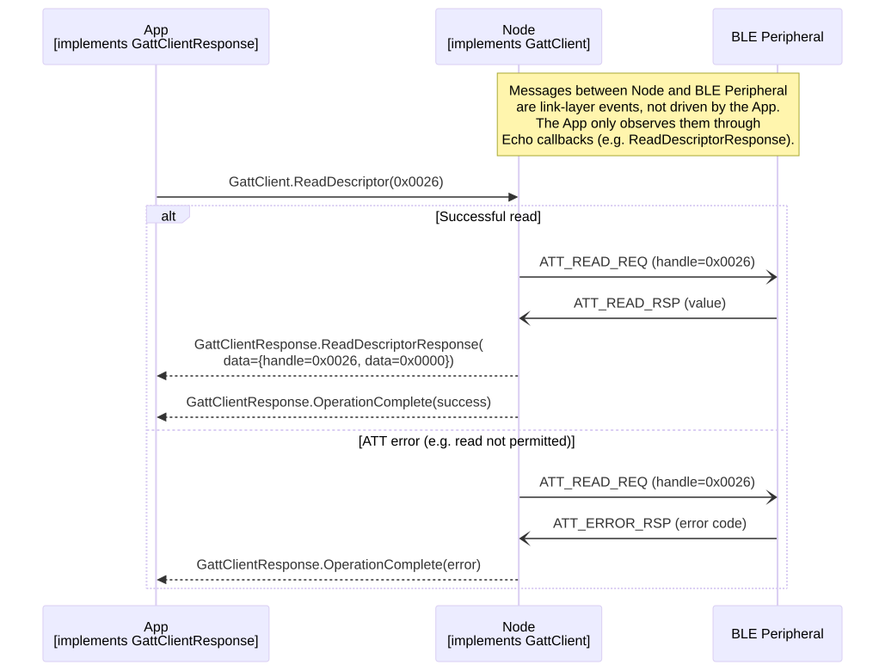
WriteDescriptor
Allowed states: connected. Pre-conditions: descriptor handle known from DescriptorDiscovered.
Response sequences:
-
Successful write:
OperationComplete(success)afterATT_WRITE_RSP. -
Peripheral-side rejection:
OperationComplete(error).
CCCD values (descriptor uuid 0x2902), written as little-endian bytes:
-
0x0000- disabled. -
0x0100- notifications enabled (no acknowledgement expected). -
0x0200- indications enabled (eachIndicationReceivedmust be acknowledged viaIndicationDone). -
0x0300- both notifications and indications enabled.
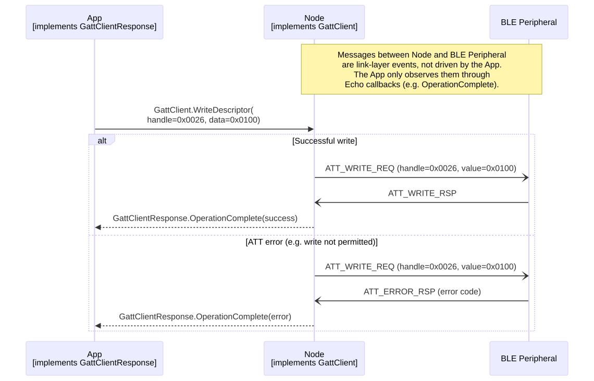
IndicationDone
Allowed states: connected. Pre-conditions: a prior IndicationReceived callback, and indications enabled on the target characteristic (WriteDescriptor(handle=<CCCD>, data=0x0200)).
Must be called exactly once for every IndicationReceived, otherwise the peripheral stalls waiting for ATT_HANDLE_VALUE_CFM. May be called while another operation is in progress. IndicationDone has no Expected response callback of its own - the App issues it and continues.
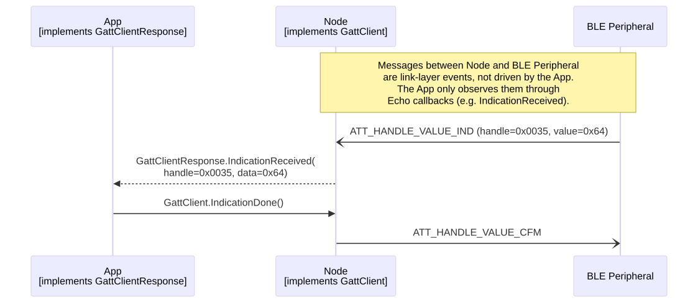
Cross-Service Sequence Diagrams
Discovery Flow
End-to-end discovery of services, characteristics, and descriptors, showing how the three per-method calls compose into a full attribute-table walk.
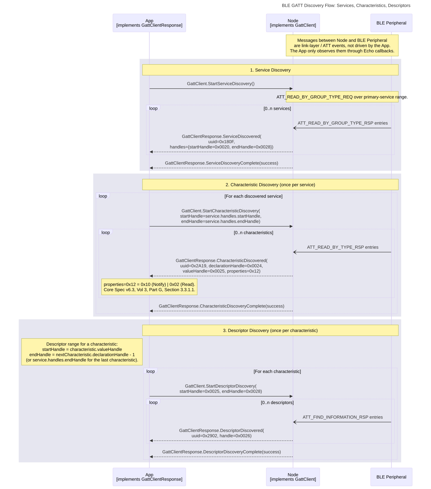
Indication Flow
Discovering the target characteristic’s CCCD, enabling indications, receiving and acknowledging them, and disabling indications afterwards. Notifications follow the same shape except that IndicationDone is not required and the CCCD byte pattern is 0x0100.
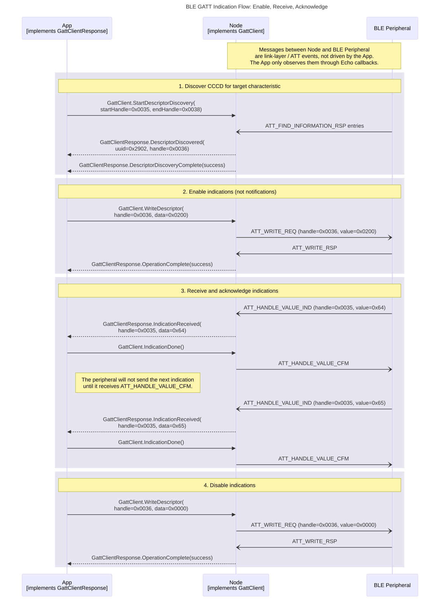
Operation Concurrency
Illustrates the one acknowledged operation at a time rule and how WriteCharacteristicWithoutResponse interleaves with an in-flight acknowledged operation.
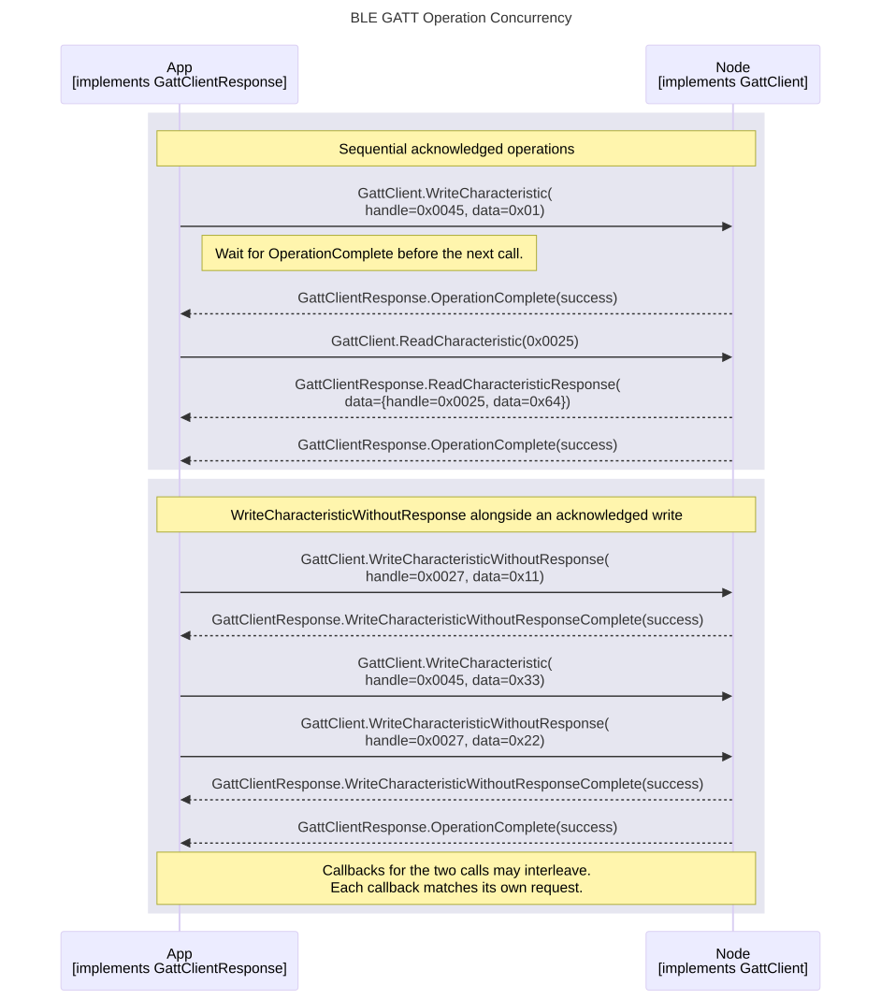
Examples
Read and Write
Pre-conditions: connected, GATT discovery complete. In this example the target vendor service occupies handles 64..69.
Concrete read / write example against a fictional BLE peripheral: read the vendor read characteristic, enable notifications via the CCCD, and read back the CCCD to confirm.
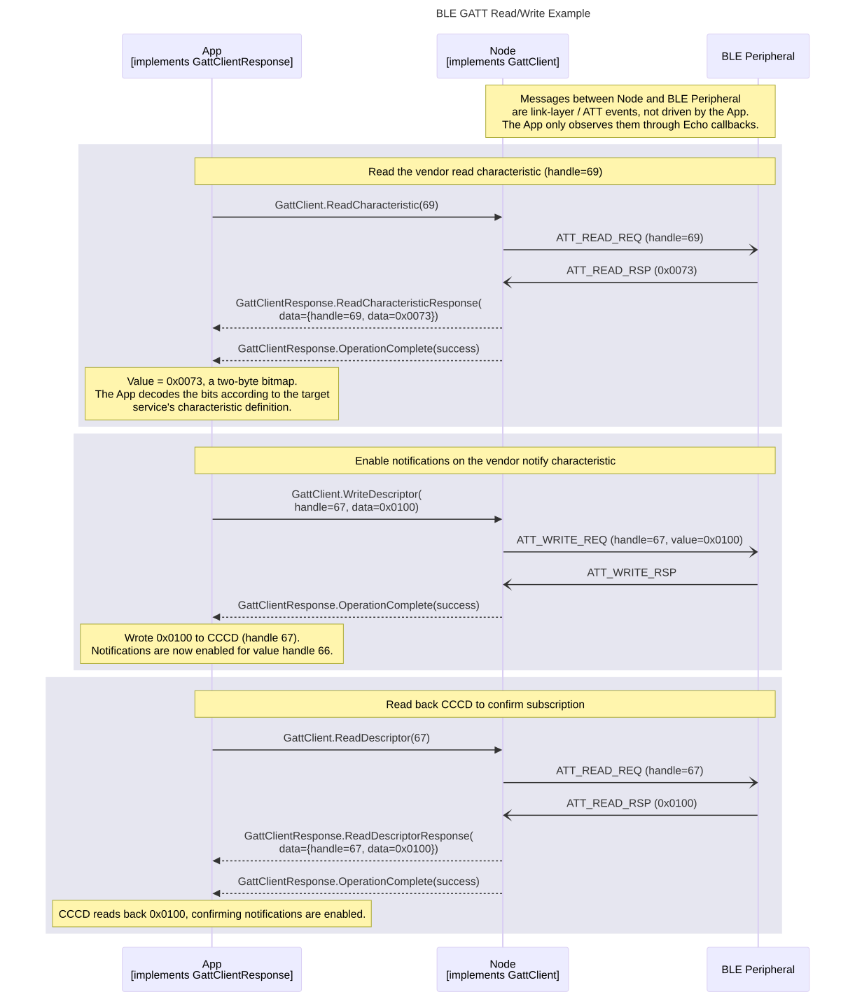
Reference
Service definition: services/ble/Gatt.proto.
View Gatt.proto inline
syntax = "proto3";
import "EchoAttributes.proto";
package gatt;
option java_package = "com.philips.emil.protobufEcho";
option java_outer_classname = "GattProto";
// Attributes exposed by the Device Information Service (DIS).
// The DIS is a Bluetooth SIG-adopted service (assigned uuid 0x180A).
// See Bluetooth SIG Device Information Service specification.
message DisServiceData
{
bytes manufacturerName = 1 [(bytes_size) = 32];
bytes modelNumber = 2 [(bytes_size) = 32];
bytes serialNumber = 3 [(bytes_size) = 32];
bytes hardwareRevision = 4 [(bytes_size) = 32];
bytes firmwareRevision = 5 [(bytes_size) = 32];
bytes softwareRevision = 6 [(bytes_size) = 32];
bytes systemId = 7 [(bytes_size) = 8];
bytes ieeeRegulatoryCertificationDataList = 8 [(bytes_size) = 32];
bytes pnpId = 9 [(bytes_size) = 7];
}
// GATT server-side wrapper for the Bluetooth SIG Device Information Service (DIS, uuid 0x180A).
// State constraints:
// Values may be set in any link-layer state; they update the local GATT database and are surfaced on the peer's next DIS read.
// Callback constraints:
// This service has no response service; methods do not result in any callbacks.
// Startup:
// GattServerDisService has no per-service startup handshake of its own. The service becomes callable
// once the paired GapPeripheral service reports CurrentState(standby) after startup.
service GattServerDisService
{
option (service_id) = 132;
rpc SetDisServiceData(DisServiceData) returns(Nothing) { option (method_id) = 1; }
}
// Attribute MTU size negotiated via the ATT Exchange MTU procedure.
// See Bluetooth Core Specification v6.3, Vol 3, Part F, Section 3.4.2 and Vol 3, Part G, Section 4.3.
message MtuSize
{
uint32 value = 1;
}
// ATT attribute handle (16-bit).
// See Bluetooth Core Specification v6.3, Vol 3, Part F, Section 3.2.2.
message Handle
{
uint32 value = 1;
}
// A GATT attribute value paired with its handle.
// See Bluetooth Core Specification v6.3, Vol 3, Part F, Section 3.2.
message AttributeData
{
Handle handle = 1;
bytes data = 2 [(bytes_size) = 512];
}
// Inclusive range of ATT attribute handles used by the GATT discovery procedures.
// See Bluetooth Core Specification v6.3, Vol 3, Part G, Sections 4.4-4.7.
message HandleRange
{
Handle startHandle = 1;
Handle endHandle = 2;
}
// GATT service definition: 16 or 128-bit UUID and the inclusive handle range that contains its declarations.
// See Bluetooth Core Specification v6.3, Vol 3, Part G, Section 3.1.
message Service
{
bytes uuid = 1 [(bytes_size) = 16];
HandleRange handles = 2;
}
// GATT characteristic: UUID, declaration and value handles, and the properties bitfield.
// See Bluetooth Core Specification v6.3, Vol 3, Part G, Section 3.3.
// The `properties` field encodes the Characteristic Properties bitfield defined in
// Bluetooth Core Specification v6.3, Vol 3, Part G, Section 3.3.1.1:
// 0x01 = broadcast
// 0x02 = read
// 0x04 = writeWithoutResponse
// 0x08 = write
// 0x10 = notify
// 0x20 = indicate
// 0x40 = authenticatedSignedWrites
// 0x80 = extendedProperties
message Characteristic
{
bytes uuid = 1 [(bytes_size) = 16];
Handle declarationHandle = 2;
Handle valueHandle = 3;
uint32 properties = 4;
}
// GATT characteristic descriptor. See Bluetooth Core Specification v6.3, Vol 3, Part G, Section 3.3.3.
// ('Descriptor' keyword is not allowed by Echo code generator, hence the abbreviated name.)
message Descriptr
{
bytes uuid = 1 [(bytes_size) = 16];
Handle handle = 2;
}
message ReadResult
{
AttributeData data = 1;
}
// Outcome of a GATT client operation.
// error typically corresponds to an ATT_ERROR_RSP (Bluetooth Core Specification v6.3, Vol 3, Part F, Section 3.4.1.1)
// or a client-side rejection before the request reaches the peer.
enum OperationStatus
{
success = 0;
// Returned when WriteCharacteristicWithoutResponse can't be processed due to a busy connection. The operation can be retried.
retry = 1;
error = 2;
}
message OperationResult
{
OperationStatus value = 1;
}
// CCCD (Client Characteristic Configuration Descriptor) bit field values for use with WriteDescriptor.
// See Bluetooth Core Specification v6.3, Vol 3, Part G, Section 3.3.3.3:
// bit 0 = notifications enabled
// bit 1 = indications enabled
enum CccdSetting
{
none = 0;
notificationEnabled = 1;
indicationEnabled = 2;
}
// ==================================================
// GATT CLIENT SERVICE DEFINITION
// ==================================================
// State constraints:
// Unless otherwise specified, all methods require an active connection.
// Callback constraints:
// Unless otherwise specified, methods do not by default result in any callbacks on the response service.
// An operation is in progress from its invocation until its listed "Expected response" has been received.
// Unless otherwise specified, only one operation may be in progress at any time.
// Non-conformance will result in an assertion.
// Discovery constraints:
// Discovery must follow the sequence: Service -> Characteristic -> Descriptor.
// Each step must complete (indicated by the corresponding *Complete response) before initiating the next.
// The maximum number of items returned depends on the configuration.
// Connection loss:
// Any pending operation (discovery, MTU exchange, or read/write) is implicitly cancelled.
// For any pending operation, the listed "Expected response" is guaranteed to be delivered with an error status.
// Startup:
// GattClient has no per-service startup handshake of its own. The service becomes callable
// once the paired GAP service reports CurrentState(connected) for the peer of interest.
// Calling any GattClient method without an active connection results in an assertion.
// Reference:
// All GATT procedures below map to Bluetooth Core Specification v6.3, Vol 3, Part G
// (Generic Attribute Profile). ATT-layer PDUs referenced in Response Sequences are
// defined in Vol 3, Part F (Attribute Protocol).
// ==================================================
service GattClient
{
option (service_id) = 134;
// Allowed states: connected
// Expected response: GattClientResponse.OperationComplete
// Additional responses: GattClientResponse.MtuSizeExchangeComplete
// Description: Requests the MTU size to be increased from the default, for better throughput.
// May only be called once per connection.
// The effective MTU size is implementation defined.
// See Bluetooth Core Specification v6.3, Vol 3, Part G, Section 4.3 (Exchange MTU).
// Response Sequences:
// On successful exchange: GattClientResponse.MtuSizeExchangeComplete -> GattClientResponse.OperationComplete(success)
// On peer / L2CAP failure: GattClientResponse.OperationComplete(error)
rpc MtuSizeExchangeRequest(Nothing) returns (Nothing) { option (method_id) = 1; }
// Allowed states: connected
// Expected response: GattClientResponse.ServiceDiscoveryComplete
// Additional responses: zero or more GattClientResponse.ServiceDiscovered
// Description: Discovers all services.
// First step of the Service -> Characteristic -> Descriptor discovery sequence.
// See Bluetooth Core Specification v6.3, Vol 3, Part G, Section 4.4 (Primary Service Discovery).
// Response Sequences:
// On completion: zero or more GattClientResponse.ServiceDiscovered -> GattClientResponse.ServiceDiscoveryComplete(success)
// On peer / L2CAP failure: GattClientResponse.ServiceDiscoveryComplete(error)
rpc StartServiceDiscovery(Nothing) returns (Nothing) { option (method_id) = 2; }
// Allowed states: connected
// Pre-conditions: Prior GattClientResponse.ServiceDiscovered supplies the service's handle range.
// Expected response: GattClientResponse.CharacteristicDiscoveryComplete
// Additional responses: zero or more GattClientResponse.CharacteristicDiscovered
// Description: Discovers all characteristics within a single service's handle range.
// Must be called once per discovered service, after GattClientResponse.ServiceDiscoveryComplete.
// The handle range should be the service's start and end handles.
// See Bluetooth Core Specification v6.3, Vol 3, Part G, Section 4.6 (Characteristic Discovery).
// Response Sequences:
// On completion: zero or more GattClientResponse.CharacteristicDiscovered -> GattClientResponse.CharacteristicDiscoveryComplete(success)
// On peer / L2CAP failure: GattClientResponse.CharacteristicDiscoveryComplete(error)
rpc StartCharacteristicDiscovery(HandleRange) returns (Nothing) { option (method_id) = 3; }
// Allowed states: connected
// Pre-conditions: Prior GattClientResponse.CharacteristicDiscovered supplies the characteristic's valueHandle.
// Expected response: GattClientResponse.DescriptorDiscoveryComplete
// Additional responses: zero or more GattClientResponse.DescriptorDiscovered
// Description: Discovers all descriptors within the given handle range of a characteristic.
// The handle range spans from the characteristic's value handle to the next characteristic's declaration handle - 1
// (or the service's end handle for the last characteristic in a service).
// See Bluetooth Core Specification v6.3, Vol 3, Part G, Section 4.7 (Characteristic Descriptor Discovery).
// Response Sequences:
// On completion: zero or more GattClientResponse.DescriptorDiscovered -> GattClientResponse.DescriptorDiscoveryComplete(success)
// On peer / L2CAP failure: GattClientResponse.DescriptorDiscoveryComplete(error)
rpc StartDescriptorDiscovery(HandleRange) returns (Nothing) { option (method_id) = 4; }
// Allowed states: connected
// Pre-conditions: valueHandle known from a prior GattClientResponse.CharacteristicDiscovered.
// Expected response: GattClientResponse.OperationComplete
// Additional responses: GattClientResponse.ReadCharacteristicResponse
// Description: Reads the value of a characteristic from the GATT server.
// See Bluetooth Core Specification v6.3, Vol 3, Part G, Section 4.8 (Characteristic Value Read).
// Response Sequences:
// On successful read: GattClientResponse.ReadCharacteristicResponse -> GattClientResponse.OperationComplete(success)
// On peer-side rejection (permissions, invalid handle, insufficient authentication): GattClientResponse.OperationComplete(error)
rpc ReadCharacteristic(Handle) returns (Nothing) { option (method_id) = 5; }
// Allowed states: connected
// Pre-conditions: valueHandle known from a prior GattClientResponse.CharacteristicDiscovered.
// Expected response: GattClientResponse.OperationComplete
// Description: Writes the value of a characteristic to the GATT server.
// See Bluetooth Core Specification v6.3, Vol 3, Part G, Section 4.9 (Characteristic Value Write).
// Response Sequences:
// On successful write: GattClientResponse.OperationComplete(success)
// On peer-side rejection: GattClientResponse.OperationComplete(error)
rpc WriteCharacteristic(AttributeData) returns (Nothing) { option (method_id) = 6; }
// Allowed states: connected
// Pre-conditions: valueHandle known from a prior GattClientResponse.CharacteristicDiscovered.
// Expected response: GattClientResponse.WriteCharacteristicWithoutResponseComplete
// Description: Writes the value of a characteristic to the GATT server without requiring a response.
// This method does not guarantee that the server has received the value.
// May be called while other operations are in progress, except for another WriteCharacteristicWithoutResponse operation.
// See Bluetooth Core Specification v6.3, Vol 3, Part G, Section 4.9.1 (Write Without Response).
// Response Sequences:
// On queued locally: GattClientResponse.WriteCharacteristicWithoutResponseComplete(success). success only means the command was queued locally; the peer never acknowledges an ATT_WRITE_CMD.
// On transient bearer backpressure: GattClientResponse.WriteCharacteristicWithoutResponseComplete(retry). The App may re-submit the same call.
// On client-side rejection (invalid handle, permission failure): GattClientResponse.WriteCharacteristicWithoutResponseComplete(error)
rpc WriteCharacteristicWithoutResponse(AttributeData) returns (Nothing) { option (method_id) = 7; }
// Allowed states: connected
// Pre-conditions: descriptor handle known from a prior GattClientResponse.DescriptorDiscovered.
// Expected response: GattClientResponse.OperationComplete
// Additional responses: GattClientResponse.ReadDescriptorResponse
// Description: Reads the value of a descriptor from the GATT server.
// See Bluetooth Core Specification v6.3, Vol 3, Part G, Section 4.12.1 (Read Characteristic Descriptor).
// Response Sequences:
// On successful read: GattClientResponse.ReadDescriptorResponse -> GattClientResponse.OperationComplete(success)
// On peer-side rejection: GattClientResponse.OperationComplete(error)
rpc ReadDescriptor(Handle) returns (Nothing) { option (method_id) = 8; }
// Allowed states: connected
// Pre-conditions: descriptor handle known from a prior GattClientResponse.DescriptorDiscovered.
// Expected response: GattClientResponse.OperationComplete
// Description: Writes the value of a descriptor to the GATT server.
// For a CCCD (uuid 0x2902), the data bytes select the notification / indication mode:
// 0x0000 = disabled, 0x0100 = notifications enabled, 0x0200 = indications enabled, 0x0300 = both enabled.
// See Bluetooth Core Specification v6.3, Vol 3, Part G, Section 4.12.3 (Write Characteristic Descriptor) and Section 3.3.3.3 (CCCD).
// Response Sequences:
// On successful write: GattClientResponse.OperationComplete(success)
// On peer-side rejection: GattClientResponse.OperationComplete(error)
rpc WriteDescriptor(AttributeData) returns (Nothing) { option (method_id) = 9; }
// Allowed states: connected
// Pre-conditions: A prior GattClientResponse.IndicationReceived callback. Indications must be enabled on the target characteristic (WriteDescriptor with data=0x0200 to its CCCD).
// Description: Must be called for every GattClientResponse.IndicationReceived to acknowledge the indication.
// Otherwise the peer stalls waiting for ATT_HANDLE_VALUE_CFM.
// May be called while other operations are in progress.
// See Bluetooth Core Specification v6.3, Vol 3, Part G, Section 4.11 (Characteristic Value Indications) and Vol 3, Part F, Section 3.4.7.3 (Handle Value Confirmation).
rpc IndicationDone(Nothing) returns (Nothing) { option (method_id) = 10; }
}
service GattClientResponse
{
option (service_id) = 135;
// Expected states: connected
// Triggered by: GattClient.MtuSizeExchangeRequest
// Description: Reports the negotiated MTU size.
rpc MtuSizeExchangeComplete(MtuSize) returns (Nothing) { option (method_id) = 1; }
// Expected states: connected
// Triggered by: GattClient.StartServiceDiscovery (for each discovered service)
// Description: Reports a single discovered service, including its UUID and handle range.
rpc ServiceDiscovered(Service) returns (Nothing) { option (method_id) = 2; }
// Expected states: connected
// Triggered by: GattClient.StartServiceDiscovery (on completion)
// Description: Signals that service discovery has finished.
rpc ServiceDiscoveryComplete(OperationResult) returns (Nothing) { option (method_id) = 3; }
// Expected states: connected
// Triggered by: GattClient.StartCharacteristicDiscovery (for each discovered characteristic)
// Description: Reports a single discovered characteristic, including its UUID, handles, and properties.
rpc CharacteristicDiscovered(Characteristic) returns (Nothing) { option (method_id) = 4; }
// Expected states: connected
// Triggered by: GattClient.StartCharacteristicDiscovery (on completion)
// Description: Signals that characteristic discovery has finished.
rpc CharacteristicDiscoveryComplete(OperationResult) returns (Nothing) { option (method_id) = 5; }
// Expected states: connected
// Triggered by: GattClient.StartDescriptorDiscovery (for each discovered descriptor)
// Description: Reports a single discovered descriptor, including its UUID and handle.
rpc DescriptorDiscovered(Descriptr) returns (Nothing) { option (method_id) = 6; }
// Expected states: connected
// Triggered by: GattClient.StartDescriptorDiscovery (on completion)
// Description: Signals that descriptor discovery has finished.
rpc DescriptorDiscoveryComplete(OperationResult) returns (Nothing) { option (method_id) = 7; }
// Expected states: connected
// Triggered by: GattClient.ReadCharacteristic
// Description: Returns the value read from the characteristic.
rpc ReadCharacteristicResponse(ReadResult) returns (Nothing) { option (method_id) = 8; }
// Expected states: connected
// Triggered by: GattClient.ReadDescriptor
// Description: Returns the value read from the descriptor.
rpc ReadDescriptorResponse(ReadResult) returns (Nothing) { option (method_id) = 9; }
// Expected states: connected
// Triggered by: GattClient.MtuSizeExchangeRequest, GattClient.ReadCharacteristic, GattClient.WriteCharacteristic, GattClient.ReadDescriptor, GattClient.WriteDescriptor
// Description: Reports the outcome of an MTU exchange, read, or write operation.
rpc OperationComplete(OperationResult) returns (Nothing) { option (method_id) = 10; }
// Expected states: connected
// Triggered by: Remote GATT server sending an indication
// Description: Indicates that an attribute value has changed on the GATT server, and must be acknowledged by the client.
rpc IndicationReceived(AttributeData) returns (Nothing) { option (method_id) = 11; }
// Expected states: connected
// Triggered by: Remote GATT server sending a notification
// Description: Notifies that an attribute value has changed on the GATT server.
rpc NotificationReceived(AttributeData) returns (Nothing) { option (method_id) = 12; }
// Expected states: connected
// Triggered by: GattClient.WriteCharacteristicWithoutResponse
// Description: Reports whether a write without response command was successfully queued by the GATT client for transmission to the GATT server.
// Success indicates the request was processed by the GATT client, but does not guarantee success on the GATT server side.
rpc WriteCharacteristicWithoutResponseComplete(OperationResult) returns (Nothing) { option (method_id) = 13; }
}